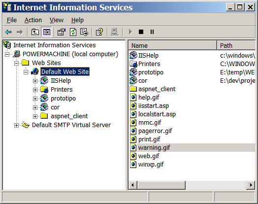
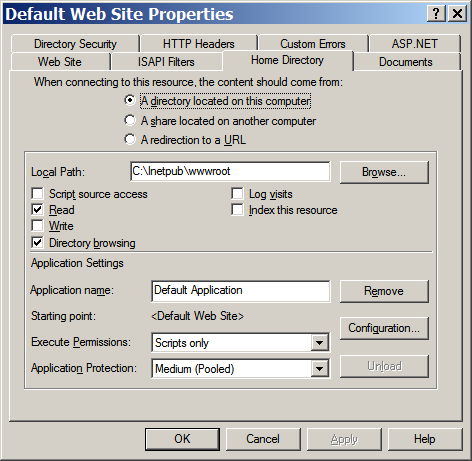
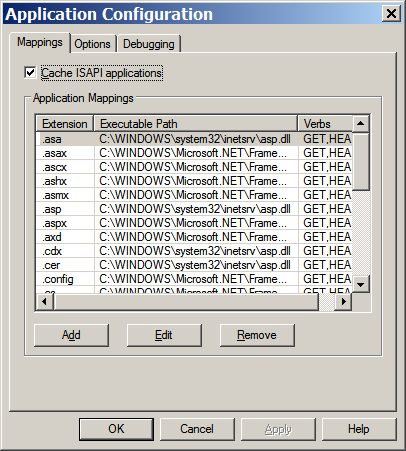
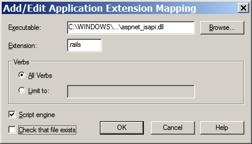
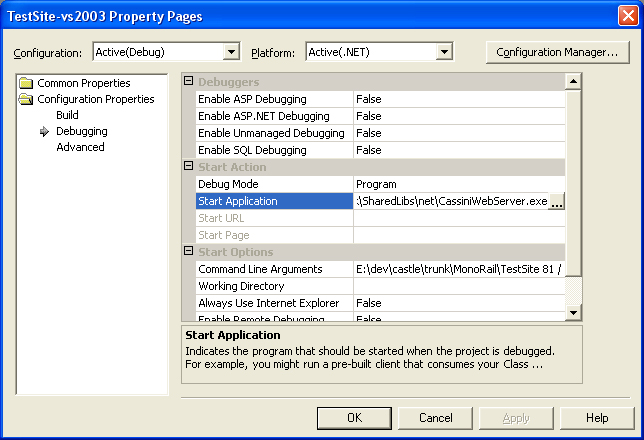

Table of contents
- 1 Installing on Internet Information Services
- 1.1 First step: open the IIS MMC
- 1.2 Second step: open the web site configuration
- 1.3 Third step: associate the file extension
- 2 Running with Cassini
- 3 Mono and XSP
- 4 Running with Apache/Mono
- 4.1 Configuring Apache
- 4.2 Deploying the application
- 5 Deploying to a shared host
Installing MonoRail
MonoRail does not require any complex installation. However, you must associate the extension you want to use with the ASP.Net ISAPI on IIS.
Installing on Internet Information Services
If you are running IIS, then you need to associate the the extension you want to use for MonoRail with ASP.Net ISAPI. This is a very simple operation. If you are concerned about shared hosting see the last section on this document.
Usually the extension is rails or castle, but you can use whatever extension you want.
First step: open the IIS MMC

Second step: open the web site configuration
- Right-click the Default Web Site item and choose Properties
- Select the Home Directory tab
- Click Configurations


Third step: associate the file extension
- Click Add
- Select the ISAPI DLL. You can copy-and-paste the complete DLL file name from another extension, such as .aspx. In most systems it will be something like C:\WINDOWS\Microsoft.NET\Framework\v1.1.4322\aspnet_isapi.dll (for .NET 1.1) or C:\WINDOWS\Microsoft.NET\Framework\v2.0.50727\aspnet_isapi.dll (for .NET 2.0).
- Fill in the extension (for example .rails) as the file extension (make sure you do not omit the leading dot)
- Uncheck the Check file exists check box
Windows XP Pro users: If your OK button is disabled even if you have Administrator rights: click in the Executable text field. This will expand the relative path to the dll into a full path and will enable the OK button.

Running with Cassini
Cassini is the easiest way to run the application as it requires nothing to be configured. It is suitable for development. You can run it from VS.Net and then be able to debug your application easily.

If you are using Visual Studio 2005, then you might want to use the integrated web server as it is basically the same.
Mono and XSP
Open a shell and go to directory containing web.config. Call xsp:
xsp --port 80
Notice that Apache2 + mod_mono is much more efficient than XSP. Use XSP only for tests and small applications development.
Running with Apache/Mono
We assume that you have Apache Httpd, mod_mono and xsp from the Mono Project installed.
Configuring Apache
Add the following lines to your httpd.conf:
LoadModule mono_module modules/mod_mono.so AddHandler mono .rails .aspx .ashx .asmx .ascx .asax .config .ascx MonoRunXSP True Alias /test "/web/test" AddMonoApplications default "/test:/web/test" <Location /test> SetHandler mono </Location>
The first line adds the mod_mono module to Apache. The second line sets up mod_mono to handle asp.net and MonoRail file extensions. The third line allows Apache to start and stop the mod_mono_server process. The following group of lines sets up /test to map to your application.
Apache Httpd 2
If you build Mod_mono from sources, file mod_mono.conf will be installed at /etc/apache2/mod_mono.conf. To load the module you only need to create a symlink and reload Apache:
ln -s /etc/apache2/mond_mono.conf /etc/apache2/mods-enabled/
Place the configuration above on /etc/apache2/sites-enabled/default and change "Location" for "Directory" if your website lives in filesystem (http://httpd.apache.org/docs/2.2/mod/core.html#location). /etc/apache2/sites-enabled/default:
AddHandler mono .rails .aspx .ashx .asmx .ascx .asax .config .ascx Alias /example /var/www/example AddMonoApplications default "/example:/var/www/example" MonoRunXSP True <Directory /var/www/example> SetHandler mono </Directory>
Paths could change depending of your distribution
Deploying the application
To deploy, simply copy your webapp's bin and Views directory as well as Global.asax and your web.config files to /web/test and then start Apache.
You can now point your browser at http://yourserver.com/test/index.rails or which ever .rails page you choose.
Deploying to a shared host
On a shared hosting, you may not be able to convince the host to map .rails extentions to the ASP.Net framework, which means that you wouldn't be able to "catch" a request for a rails document and map it to the appropriate controller.
A simple solution for this problem is to just switch to .aspx extention (and change the httpHandler configuration, of course). For example:
<httpHandlers> <add verb="*" path="*.ashx" type="Castle.MonoRail.Framework.MonoRailHttpHandlerFactory, Castle.MonoRail.Framework" /> </httpHandlers>
Generated by Castle Anakia.
Sponsored by  Castle Stronghold.
Castle Stronghold.